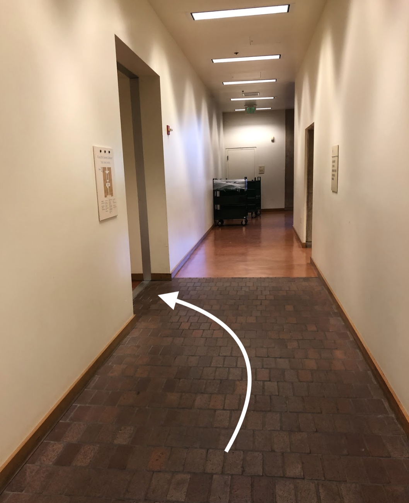

Today you'll be re-experiencing Stanford through audio and sound. You'll be going on a tour of sounds-- both curated and unintentionally made-- across campus. Everything that takes up visual space also takes up auditory space, and sound can be designed just as carefully as visuals!
Along the tour, focus your attention on what you hear rather than what you see. Make sure you're not wearing earphones or headphones, but keep them on hand if you have them. There will be audio attached at some points along this walking tour.
Here we go!
Our first stop is the roundabout at the intersection of Campus Drive and Escondido Road.
Stand at the northwest corner of the intersection (the corner where Kimball Hall is). You've reached the first piece!
Make sure you're not completely blocking the sidewalk and close your eyes for a few seconds to listen to the sounds at this stop. Can you interpret what sounds are natural, a result of manmade objects, and/or coming directly from humans? Notice that this roundabout is an interesting mix of all three of these categories. Vehicles are passing by, birds might be chirping in the trees around you, and you may hear the occasional chatter of people passing by you.
The video below is a snapshot of this stop from a different time. How similar or different is your experience from this digitally recorded experience?
Now let's head on over to our next stop! Start walking over to Arillaga Dining. As you walk over, pay attention to how the sounds of vehicles and cars fade away as you walk away from the roundabout. What other changes can you hear as you move through space?
Once you get to Arrillaga, sit down at one of the tables outside the dining hall.
Close your eyes and listen to your environment for a few seconds. What do you hear? In this next step, we'll be touring sharp transitions of sound created between the inside and outside of buildings. While sitting down, imagine the transition you might hear when you open the door and walk into Arrillaga.
Now pay close attention to what you hear right now (outside Arrillaga) and walk towards the front entrance of Arrillaga.
Remembering to focus on the change in sound, open the door, and walk inside. What did you notice?
In this transition, notice that not only did the volume of sound increase, the diversity of sound expanded to include motley of voices and clatters of dishes and utensils.
Walk slowly up the stairs and notice how this change increases as you get closer to the dining area.
Let's head over to our next stop! As you walk out of Arrillaga, focus again on the sound transition from the inside of a building to the outside world.
To experience a digital form of the sound transition you just experienced, here's an audio recording of me walking into Arillaga. With just audio, can you identify when I opened the door?
Our next stop is Green Library. Head over to the entrance in front of Meyer Green (right next to Coupa Cafe). Don't go in yet!
Take a seat at one of the benches in front of the entrance and close your eyes. What do you hear? What sounds dominate, and what fades into the background? What do you imagine the sound transition will be like as you walk into Green? Similar to how you experienced Arrillaga, focus on the transition in sound and walk into Green Library.
Tap your ID to get in. Upon turning right, you should see a staircase on the left. Use the stairs to go down to the basement.

Upon going down the staircase, turn left. You should see an abandoned construction area surrounded by caution tape.
I found this site particularly interesting, because the vibe of what you see echoes the tone of what you hear. It sounds like what you'd imagine an abandoned construction area in the basement of Green to sound like. Lonely and a bit creepy.
Now head back towards to the staircase, but try getting there by going between two rows of bookshelves.
Stop in the middle of two rows, close your eyes, and take a few seconds to take in the sound around you. Notice that the surrounding bookshelves change the way sound reaches your ears. You can hear that you're in a tighter space than before.
Now continue back towards the staircase but this time, use the elevator to head to the third floor. Pay attention to the sounds the elevator makes as it makes its way to you.
What do the sounds tell you about its age and structure? Can you use its sound to make any inference about its future?
Once you're on the third floor, get out of the elevator and turn right. We're heading over to listen to sounds you might have overlooked before from a drinking water fountain.
Upon reaching the "Communication Room" sign, take another right.
You should see a water fountain on your right. As you approach, notice what sounds you hear. Try drinking some water! What does water actually sound like as it comes out of the fountain?
Now head back to the elevator and go back to the first floor. Upon exiting the elevator, turn right and keep walking to the Bing Wing of Green. The path to get to the next exhibit in Green is a bit tricky, so bear with me here!
First, follow the sign to the Bing wing...
Then, turn left at this hallway. At this point, start paying attention to the sound of your footsteps. The floor changes textures here, so the sound of your footsteps will change as well!
Upon turning left, you should see the following... Walk straight ahead.
You should see a framed map of San Francisco. Turn left and follow the hallway.
At the end of that hallway, turn right. You should see a wide and tall staircase to your right. Whew, we're at our next piece!

This space is one of the more expansive and open spaces within a building on campus. Climb up the stairs and notice how differently sound travels and reverberates off the walls. How does your auditory experience contribute to your perception of this place? I thought the wide, echo-ey nature of the sounds made in this space augmented the awe I felt at the visual architecture of the space. Feel free to spend some time taking in the sounds of this place.
Now head down the stairs and out the doors directly in front of you (after a bag check). The next stop is a bit hidden, and will require you to listen for a "whoosh" sound to find the source. Upon exiting Green, head to the bike racks to your left. Listen for the sound you think I'm referring to-- it's quite distinctive! Can you locate its source?

For a recap, so far we've toured sounds that are inadvertently created by man-made objects such as cars and water fountains. We've also experienced sounds that are made by humans themselves (Arrillaga dining). In the last stop, we'll experience an environment that, though not obvious at first, was actively designed to achieve a certain sound.

Head on over to the final stop of this exhibit-- the Windhover Contemplative Center. Windhover is technology-free zone, so you can put your phone away after reading the rest of this guide.
Windhover was opened in 2014 to help the Stanford community reflect and meditate during the year. Here's the stated intent for the center from the Windhover website:
As you experience the center, notice how the sounds around you have been curated to accomplish this purpose. You'll need an ID card to get in, but if you happen to be unable to go in, there's a small pond at the back of the center (outside of the building) where you can sit and experience the sounds around you without an ID.
Take time to recognize how the sounds here both shape and are shaped by the center's physical structure, visuals, and its ultimate objective to help you reflect and replenish yourself. Also notice that your auditory experience might change when you remove this walking tour's digital mediation of your experience. But most of all, take time to decompress and enjoy the space!
Thank you for joining me on this tour, and I hope this opened up a new dimension of the Stanford campus for you to enjoy!
If you enjoyed this experience, here are some other sound exhibits you might want to check out:
Everyday Listening
Exploratorium Sound Exhibits